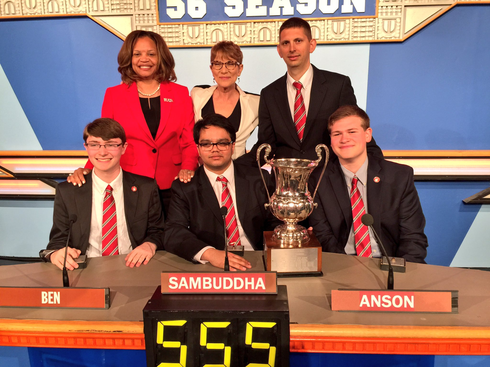
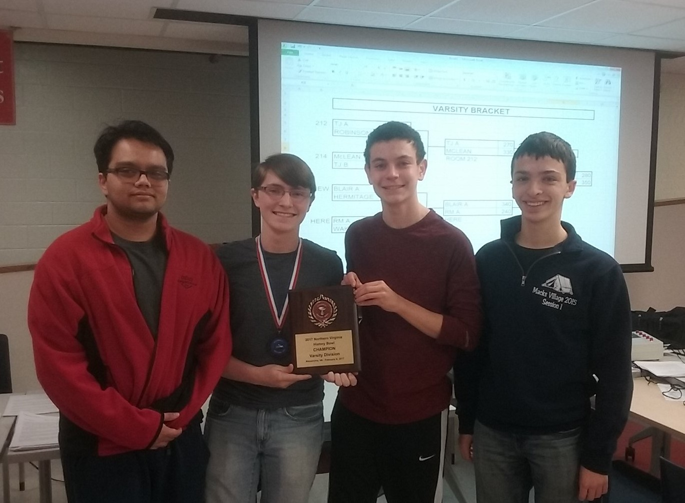
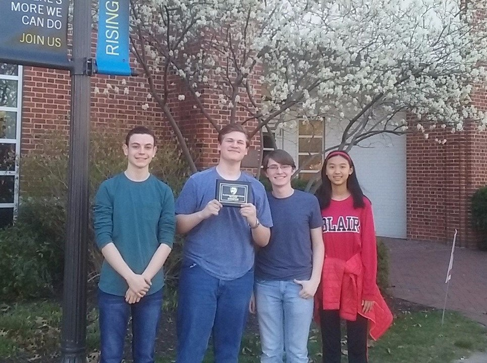

See the Archive for results from other seasons.
2016-2017
The 2017 High School National Championship Tournament was held in Atlanta, Georgia on 5/27 and 5/28. Blair's A Team placed 15th in a field of 304 teams.
The B Team placed 65th
The team won the It's Academic finals and superbowl.
The team was also featured as the National Academic Quiz Tournaments' High School Team of the Week.

Members
Sambuddha Chattopadhyay('17)*
Anson Berns('19)
David Witten('18)
Ian Rackow('19)
Ben Miller('18)
Haydn Gwyn('19)*
Sophia Weng('20)
Matthew Shu('20)
Matthew Shu('20)
Daniel Levy('20)
Jason Ma('18)
Shawn Zhao('20)
Results from 2016-2017:
1st Place
- Johns Hopkins Fall Novice Tournament (IS-159A)
- VCU Winter Tournament (IS-162)
- RM Winter Novice (A Team)
- Georgetown WHAQ Mirror
- Northern Virginia History Bowl - Varsity 
- Maryland NAQT State Championship (A Team)
- JHU Blue Jay Bowl III 
2nd Place
- Centennial Fall Tournament (IS-161A)
- RM Winter Novice (B Team)
- Mountain Vista Invitational (B Team)
- TJIAT 2017 (A Team)
- HFT @ Georgetown Spring
3rd Place
Other Results